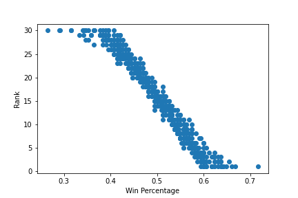
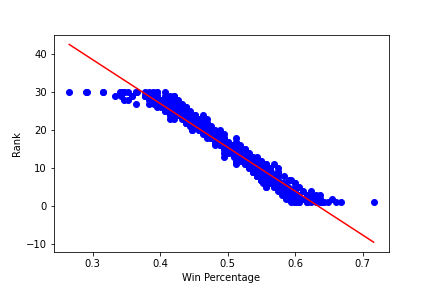
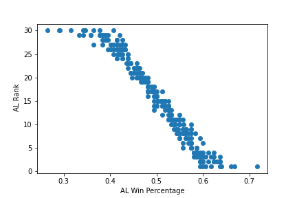
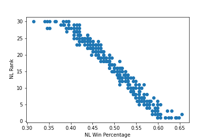

Find single or total metrics for baseball players in a variety of different metrics below.
Click the metric you would like to see from the table right under this.
Please only select one metric at a time.
| Metrics |
|---|
Select Search Criteria below. If nothing is selected from a list, all possibilities from said list will be included.
To deselect an option, click the option again. Click Enter Query to see the results.
| Team Name |
|---|
| Year |
|---|
| League |
|---|
Here I used linear regression to see if a team's ranking in the entire league could be determined by win percentage. My model had an accuracy of 93.31% with a mean squared error of 5.2477.
This data only looked at a period of 2001 to 2019. While data from previous years may help give a better prediction, consideration of different baseball eras may lead to wildy differing results. 2020 was left out for being an outlier.
Below, you can see the graphs of rank compared to win percentage along with a graph that incorporates the prediction line.
 Next, I tried to see if there has been a difference between AL and NL with regards to win percentage. Using the same methods as above, I made graphs and linear regression models for this data.
 The accuracy of these models were higher than the accuracy for both leagues combined.
AL had an accuracy of 95.11 while NL had an accuracy of 96.17. The mean square errors for both were 3.86 and 2.58, respectively.
The American league tended to have the most teams both over and under the expected average winrate. While this is mostly expected to be the case, as most games are played within division so very good teams or very bad teams will affect their own divisions more, several outliers were particularly interesting.
In the near future, I will explore the Seattle Mariners' dominance in 2001 with my player database. The goal is to see if batting metrics exist that will help show how this team tied the record for most wins in a season or if this achievement was a result of non-batting excellence.
| Rank | All% | AL% | NL% |
|---|